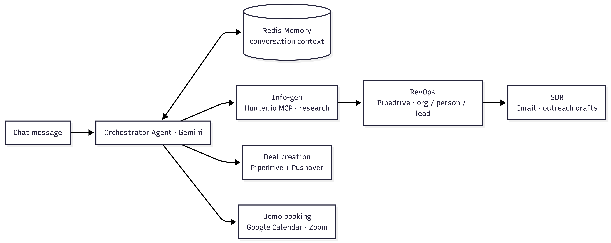

AI AUTOMATION · N8N · MULTI-AGENT · PIPEDRIVE · MCP
RevFlow Multi-Agent Sales Automation
A multi-agent sales co-pilot that researches prospects with Hunter.io, creates leads in Pipedrive, drafts personalized outreach emails, books demo calls on Google Calendar, and creates deals — all from one chat conversation.
01 · Problem
Problem Statement
The Challenge
The business-development pipeline is a chain of disconnected manual chores: hunting prospects, keying them into the CRM, writing outreach emails, scheduling demos, and creating deals. Each hand-off slows the team down and risks losing leads.
Why It Matters
Prospects who aren't entered fast get forgotten, follow-up emails arrive late, and double-booked calendars burn trust. Automating the full flow in one chat lets a single salesperson run the entire motion in minutes.
Goals
- Generate qualified prospect data from a single instruction.
- Auto-create organizations, persons, and leads in Pipedrive.
- Draft personalized outreach to every lead and book demos only when asked.
- Create deals only after explicit user confirmation.
02 · Design
System Architecture

How It Works
- A chat trigger feeds the user's request to an orchestrator agent (Gemini) backed by Redis memory; the agent decides which sub-agent tool to call.
- Info-gen sub-agent researches and returns structured client data for up to 3 prospects using the Hunter.io MCP tool.
- RevOps sub-agent creates the organization, person, and lead in Pipedrive; SDR sub-agent drafts a Gmail message to each lead from the CRM.
- On request, the deal_creation sub-agent finds the person and creates a deal (after confirmation), while the Demo booking sub-agent checks availability and schedules the event with a Zoom link.
Tech Stack
- AI / LLM — Google Gemini (orchestrator + sub-agents), OpenAI
- CRM — Pipedrive
- Prospect Data — Hunter.io MCP
- Email / Calendar — Gmail, Google Calendar · Memory — Redis · Notifications — Pushover
03 · Videos
Project Videos
RevFlow Multi Agent Sales Automation Demo
End-to-end demo of the sales flow: research prospects, create leads, draft emails, and book demos from one chat.
04 · Process
Standard Operating Procedure (SOP)
The repeatable process used to build and run RevFlow.

Build the Orchestrator
Configure the chat trigger and the Gemini agent, attach Redis memory for conversation context, and register the five sub-agents as tools. This lets the orchestrator route each user request to the right sub-agent.

Generate Prospect Info
The Info-gen sub-agent takes the user's target (for example "US clients for AI automation"), searches with the Hunter.io MCP tool, and returns structured records for up to 3 clients. The structured output parser keeps the data consistent for the next sub-agent.

Create CRM Records
The RevOps sub-agent parses the structured data and creates the organization, person, and lead records in Pipedrive. Every prospect now lives in the CRM with all contact details linked to its lead.

Draft Outreach Emails
The SDR sub-agent fetches all persons from Pipedrive and drafts a personalized HTML Gmail message for each lead. The emails introduce the agency, highlight the AI services, and close with the contact details.

Create a Deal on Approval
The deal_creation sub-agent looks up the requested person in Pipedrive and — only after the user confirms — creates the deal. A success or failure notification is pushed to confirm the outcome.

Book the Demo
The Demo booking sub-agent checks Google Calendar availability for the requested slot, then creates the event with a product description and a Zoom link. The user is always asked for the date and time before anything is booked.
Notes & Caveats
The orchestrator is instructed to always ask before creating a deal and to confirm date/time before booking demos — keep that in the system prompt. Redis memory lets the agent follow the conversation across multiple turns.